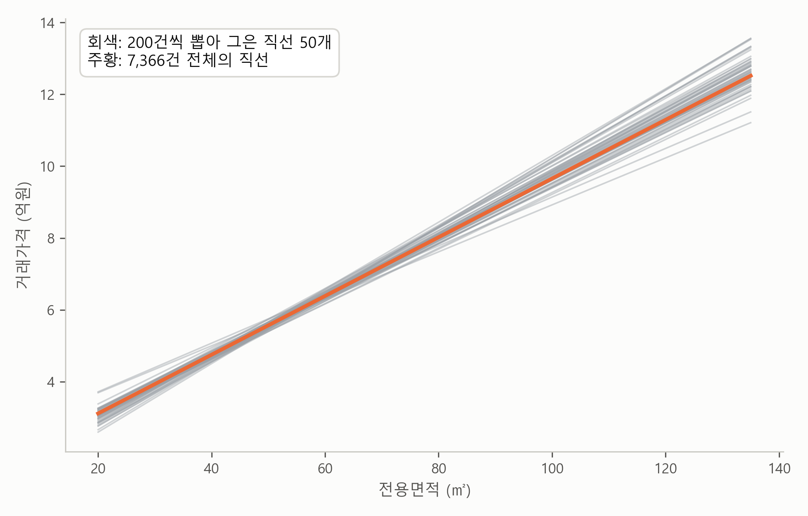
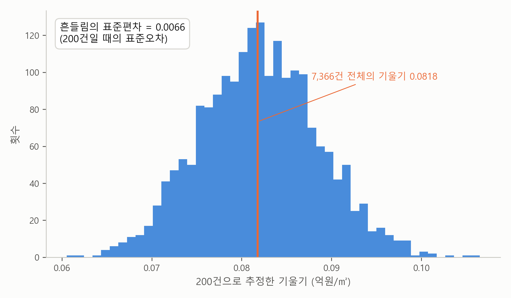
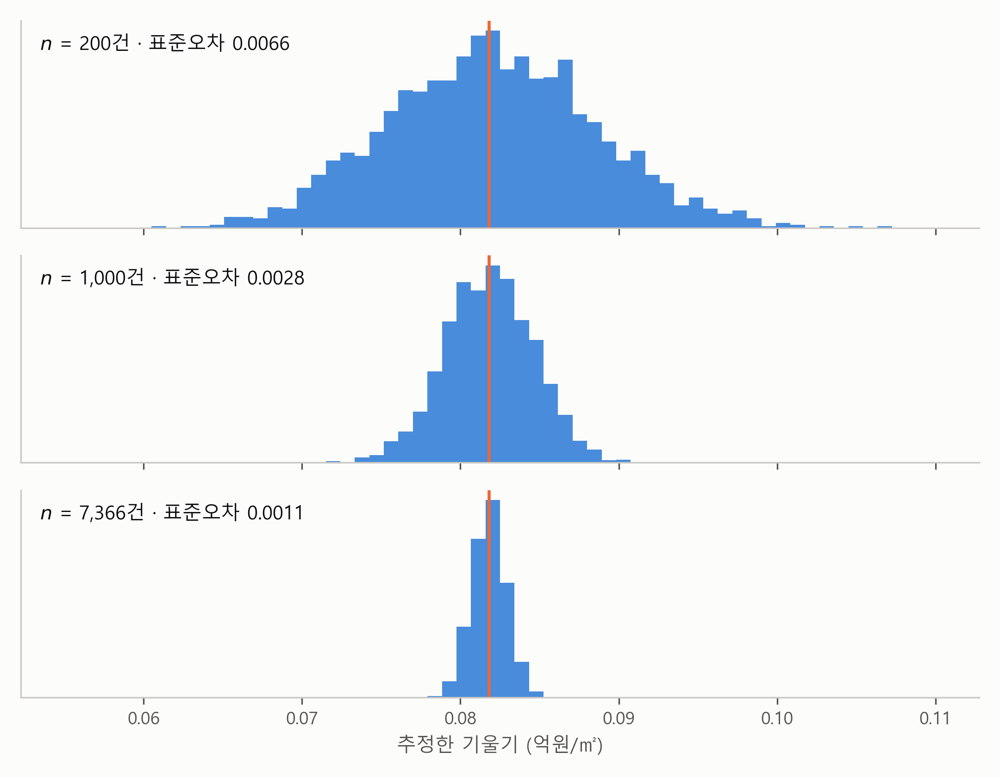
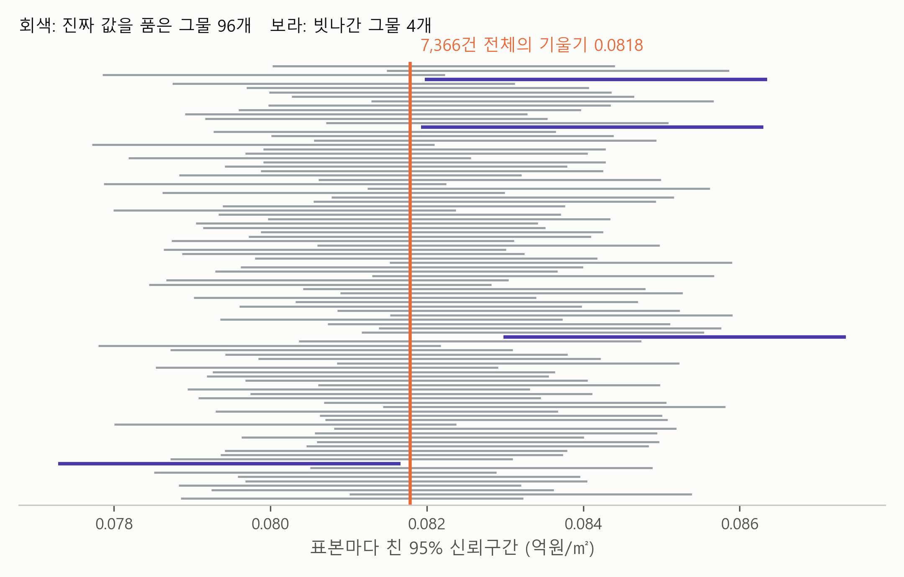
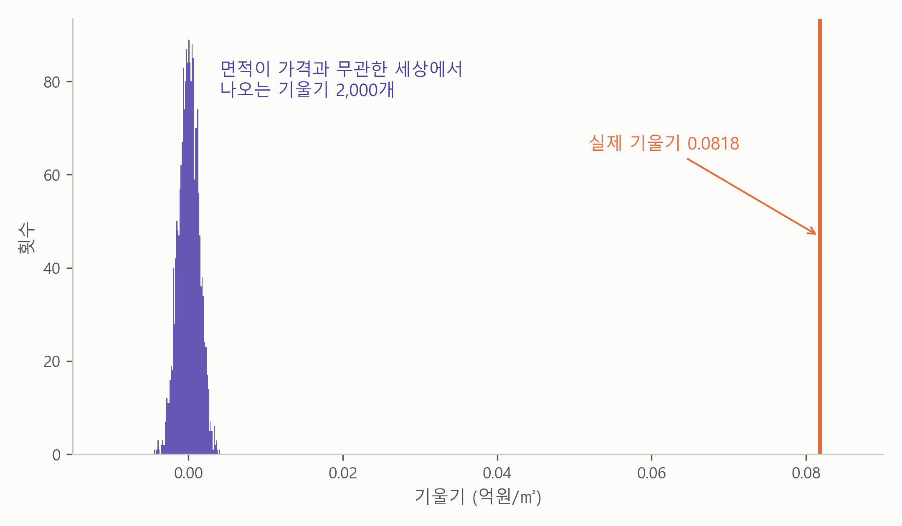
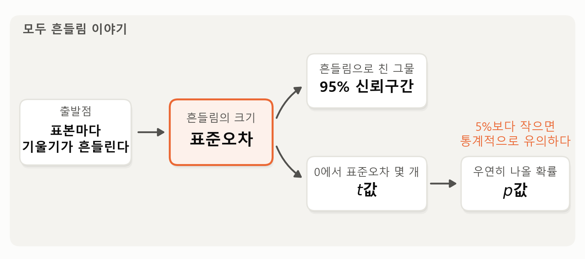

3. 이 기울기를 믿어도 되나 — 표준오차, 신뢰구간, \(p\)값#
이 장 첫머리 보고서의 회귀 결과 표는 노원구 아파트 매매 7,366건으로 한 단순회귀분석의 결과를 요약한 것입니다. 그 결과를 표 3-1로 다시 펼쳐 놓겠습니다.
표 3-1. 노원구 아파트 거래가격(억원)의 단순회귀분석 (\(n\) = 7,366)
추정값 |
표준오차 |
\(t\)값 |
95% 신뢰구간 |
\(p\)값 |
|
|---|---|---|---|---|---|
기울기 (면적 1㎡당, 억원) |
0.0818 |
0.0009 |
93.4 |
0.080 ~ 0.084 |
< 0.001 |
절편 (억원) |
1.48 |
0.06 |
25.5 |
1.37 ~ 1.59 |
< 0.001 |
첫 칸의 기울기 추정값 0.0818은 앞 절에서 다뤘습니다. 이번에는 기울기 줄의 나머지 칸들(표준오차 0.0009, \(t\)값 93.4, 95% 신뢰구간 0.080~0.084, \(p\)값 < 0.001)을 풀어 볼 차례입니다. 네 개의 낯선 숫자처럼 보이지만, 사실 전부 한 가지 질문에 대한 답입니다.
기울기 추정값 0.0818은 어쩌다 우연히 나온 숫자 아닌가?
우리가 가진 것은 최근 1년 동안 노원구에서 행해진 아파트 매매 7,366건뿐입니다. 거래가 유난히 뜸했던 해였다면, 혹은 대형 평수가 유난히 많이 팔린 해였다면, 최소제곱이 찾은 기울기도 0.0818이 아닌 다른 값이었겠죠. 그 “다른 값”들이 얼마나 다를지 — 즉 이 숫자가 얼마나 흔들리는 숫자인지 — 를 측정하는 것이 이 네 칸의 일입니다. 흔들림이 크면 못 믿을 숫자고, 흔들림이 작으면 믿을 만한 숫자입니다.
여론조사의 오차범위#
본격적인 실험에 앞서, “숫자가 흔들린다”는 말부터 아주 익숙한 예로 감을 잡아 보죠. 여론조사 뉴스입니다. 대통령 지지율 45%. 뉴스에 늘 나오는 숫자죠.
그런데 이 45%는 전 국민에게 물어본 결과가 아닙니다. 보통 1,000명쯤에게 전화를 걸어 물어본 결과입니다. 일부만 보고 전체를 짐작하는 거죠. 만약 그날 다른 1,000명에게 전화를 걸었다면 어땠을까요? 44%가 나왔을 수도 있고, 46%가 나왔을 수도 있습니다. 조사가 틀려서가 아닙니다. 누구에게 묻게 되느냐가 운이기 때문입니다. 이것이 이 절 전체를 꿰는 한 문장입니다.
일부만 보고 측정한 숫자는 운에 따라 조금씩 흔들린다.
그래서 여론조사 뉴스 끝에는 꼭 “오차범위 ±3%포인트”라는 말이 붙습니다. 숫자만 주면 오해할까 봐, 흔들림의 폭을 같이 알려 주는 겁니다. 보고서의 기울기 추정값 0.0818도 지지율 45%와 똑같은 처지입니다. 해당 1년 동안 노원구에서 일어난 아파트 매매 7,366건만 보고 측정한 숫자니까요. 다만 여론조사와 달리, 우리는 이 흔들림을 직접 실험해서 눈으로 볼 수 있습니다.
표본이 달랐다면 — 흔들림을 직접 본다#
가상 실험의 설계는 이렇습니다. 노원구 아파트 매매 7,366건 전체를 “일어날 수 있었던 거래의 전부”로 가정합니다. 여론조사로 치면 전체 유권자인 셈이죠. 그리고 우리가 그중 200건만 손에 넣었다고 상상합니다. 여론조사가 1,000명에게만 전화를 걸듯이요. 어떤 200건을 만나느냐는 순전히 운입니다. 운이 각각 다른 세상을 50번 만들어, 그때마다 최소제곱 직선을 그어 겹친 것이 그림 3-1입니다.

그림 3-1. 200건씩 뽑아 그은 직선 50개(회색)와 7,366건 전체의 직선(주황). 어떤 거래를 만나느냐에 따라 직선이 조금씩 다르다.
그림에서 보듯이 직선은 하나가 아니라 다발입니다. 지지율이 45, 44, 46으로 흔들리던 것과 똑같은 일이 기울기에서도 벌어지고 있는 겁니다. 다행히 제멋대로는 아니고, 7,366건 전체로 그은 직선(주황) 주위에서 조금씩 흔들리는 정도죠. “표본이 달랐다면 기울기도 달랐다”는 말을 이 그림 한 장에서 잘 이해할 수 있습니다. 숫자가 흔들린다는 것을 눈으로 확인했으니, 다음 질문은 자연스럽습니다. 그래서, 얼마나 흔들리는 걸까요?
흔들림의 크기 — 표준오차#
이번에는 흔들림의 크기를 숫자 하나로 측정해 보겠습니다. 방법은 이렇습니다. 직선 50개로는 부족하니 2,000번 반복합니다. 그리고 직선 전체를 기억하는 대신, 직선마다 기울기 값 하나씩만 모읍니다. 직선 하나가 숫자 하나가 되어 떨어지는 셈이죠. 그 2,000개를 쌓은 히스토그램(histogram)이 그림 3-2입니다.

그림 3-2. 200건씩 2,000번 뽑아 추정한 기울기들. 7,366건 전체의 기울기(주황 선) 주위에 종 모양으로 모인다.
그림에서 두 가지가 보입니다. 첫째, 기울기들은 7,366건 전체로 추정한 기울기 0.082 주위에 종 모양으로 모입니다. 많이 나온 값은 높이 쌓이고 드물게 나온 값은 낮게 쌓인 것뿐입니다. 앞에서 직선 다발이 흔들리던 그 폭이, 이제 산의 폭으로 보이는 겁니다. 둘째, 그 퍼짐에는 크기가 있습니다 — 이 히스토그램의 표준편차는 0.0066입니다. 통계학은 바로 이 숫자에 표준오차(standard error)라는 이름을 붙였습니다.
표준오차 = 표본을 새로 뽑을 때마다 추정값이 흔들리는 정도의 표준편차
“오차”라는 이름 때문에 계산이 틀렸다는 뜻으로 오해하기 쉽지만, 그게 아니라 운이 만드는 흔들림의 크기입니다. 계산은 정확합니다. 다만 일부만 봤기 때문에 생기는 흔들림이 있을 뿐이고, 그 크기가 표준오차입니다. 표준오차가 크면 “다른 표본이었으면 꽤 다른 숫자가 나왔을 것”이고, 작으면 “누가 언제 뽑았어도 비슷한 숫자가 나왔을 것”입니다.
데이터가 많을수록 흔들림은 줄어든다#
그렇다면 보고서에 적힌 기울기의 표준오차는 왜 0.0066이 아니라 0.0009일까요? 간단합니다 — 보고서는 200건이 아니라 7,366건을 썼으니까요. 같은 가상 실험을 표본(sample) 크기만 바꿔가며 반복한 것이 그림 3-3입니다.
그런데 전부 합쳐 7,366건뿐인데 어떻게 7,366건짜리 표본을 “새로” 뽑을 수 있을까요? 한 번 뽑은 거래를 도로 넣고 다시 뽑으면 됩니다. 그러면 같은 거래가 두 번 뽑히기도 하고 어떤 거래는 한 번도 안 뽑히기도 해서, 크기는 같아도 구성이 조금씩 다른 표본이 매번 새로 만들어집니다. 이 실험의 모든 표본은 이 방식으로 뽑았습니다.

그림 3-3. 같은 실험을 \(n\) = 200, 1,000, 7,366건으로 반복하면 히스토그램이 점점 좁아진다.
그림에서 보듯이 200건일 때 0.0066이던 흔들림이 1,000건에서 0.0028로, 7,366건에서 0.0011로 줄어듭니다 — 보고서에 적힌 0.0009와 거의 같은 크기죠. 보고서의 표준오차는 이런 반복 실험 없이 공식을 사용해 한 번에 계산된 것이지만, 그 공식이 측정하는 것이 바로 이 흔들림입니다. 직관적으로도 당연합니다. 여론조사도 1,000명보다 1만 명에게 물으면 더 정확해지듯, 데이터가 많을수록 운이 낄 자리가 줄어듭니다. 7천 건이 넘는 데이터로 측정한 보고서의 기울기는 꽤 단단한 숫자인 셈입니다.
신뢰구간 — 흔들림의 폭으로 친 그물#
신뢰구간은 겁먹을 것 없습니다. 사실 낯선 것이 아니거든요. 여론조사 뉴스의 그 오차범위가 바로 신뢰구간입니다. 지지율 45%에 오차범위 ±3%포인트면, 진짜 지지율은 42%에서 48% 사이쯤이라는 뜻이었죠. 숫자 하나 대신 구간으로 답하는 겁니다.
우리 기울기도 똑같이 합니다. 표본이 바뀔 때 기울기 추정값이 흔들리는 크기, 곧 표준오차를 알고 있으니, 추정값에서 표준오차 2개만큼 양쪽으로 그물을 칩니다. 계산해 보면 0.0009 곱하기 2는 0.0018이고, 0.0818에서 빼면 0.080, 더하면 0.084입니다.
0.0818 ± 2 × 0.0009 ⇒ 0.080 ~ 0.084
보고서의 “95% 신뢰구간”(confidence interval)이 정확히 이렇게 만들어진 구간입니다. 95%의 뜻은 이렇습니다 — 표본을 바꿔가며 같은 방식으로 그물을 치면, 그 그물들이 100번 중 95번쯤은 진짜 값을 품습니다. 그림 3-4가 그것을 실험해 본 것입니다. 앞의 가상 실험처럼 7,366건짜리 표본을 100번 새로 뽑아, 표본마다 그물을 쳤습니다.

그림 3-4. 7,366건짜리 표본을 100번 새로 뽑아 표본마다 친 그물(추정값 ± 표준오차 2개). 회색 96개는 7,366건 전체의 기울기(주황)를 품고, 보라 4개는 빗나갔다.
그림에서 보듯이 그물은 표본마다 조금씩 옮겨 다닙니다. 그래도 100개 가운데 96개가 주황 선, 곧 7,366건 전체의 기울기를 품었고, 빗나간 것은 4개뿐입니다. 95%는 이렇게 그물을 칠 때마다 진짜 값을 품게 되는 비율입니다. 보고서의 그물 하나도 이런 그물 가운데 하나입니다.
실용적으로는 이렇게 읽으면 충분합니다: “이 데이터와 무리 없이 맞는 기울기는 ㎡당 800만~840만원 사이다.” 거래가 7천 건이 넘다 보니 그물이 아주 좁습니다 — 이것이 “기울기 818만원”을 자신 있게 말할 수 있는 이유입니다.
만약 아무 관계가 없다면 — \(t\)값과 \(p\)값#
마지막 두 칸은 더 극단적인 질문을 던집니다. “면적과 가격이 사실 아무 관계가 없는데, 0.0818이 순전히 우연으로 나온 것은 아닌가?”
이것도 직접 실험해 볼 수 있습니다. 7,366건의 가격표를 떼어 무작위로 뒤섞어 연결시키는 겁니다. 25평 아파트에 84평의 가격표가 붙기도 하는, 면적과 가격의 관계가 완전히 끊어진 세상이죠. 이런 세상에서도 최소제곱은 군말 없이 기울기를 내놓습니다. 이런 작업을 2,000번 반복해 기울기 2,000개를 모은 것이 그림 3-5입니다.

그림 3-5. 가격표를 무작위로 뒤섞은 “무관한 세상”에서 나온 기울기 2,000개(보라). 0 주위의 좁은 산이 되고, 2,000번 중 가장 큰 값도 ±0.005를 넘지 못한다. 실제 기울기 0.0818(주황)은 아득히 바깥이다.
그림에서 보듯이 무관한 세상에서도 우연 때문에 기울기가 정확히 0은 아닙니다. 하지만 그 우연의 크기는 ±0.005가 고작입니다. 그럼 실제 기울기 0.0818은 어디쯤에 있을까요? 거리를 측정할 자가 마침 우리에게 있습니다. 흔들림의 단위, 표준오차입니다. 표준오차 하나(0.0009)를 눈금 한 칸 삼아 0에서부터 걸어가 보죠. 열 칸, 서른 칸을 지나면 우연의 보라색 산은 이미 까마득히 뒤로 사라지고, 아흔세 칸째에 이르러서야 실제 기울기 0.0818을 만납니다. 우연의 산에서 나온 기울기들은 눈금 다섯 칸을 넘는 일조차 없었는데, 실제 기울기는 0에서 표준오차의 93배(倍)만큼 떨어져 있는 겁니다. 이 거리가 바로 보고서의 \(t\)값(\(t\)-value)입니다.
\(t\)값 = 추정값이 0에서 표준오차의 몇 배만큼 떨어져 있는가 = 0.0818 ÷ 0.0009 ≈ 93
그리고 \(p\)값(\(p\)-value)은 이 질문의 확률 버전입니다: 무관한 세상에서 이만한 기울기가 우연히 나올 확률은? \(t\)가 2만 넘어도 그 확률은 5% 아래로 떨어집니다. \(t\)가 93이면 그 확률이 사실상 0이고, 보고서는 이것을 “< 0.001”로 적은 것입니다. 그러니 “면적과 가격이 무관한데 우연히 이런 결과가 나왔다”는 가능성은 접어도 됩니다.
\(p\)값이 5%(0.05)보다 작으면 흔히 그 계수가 통계적으로 유의하다(statistically significant)고 말합니다. 무관한 세상에서는 좀처럼 나오지 않을 만큼 0에서 떨어져 있다는 뜻으로, 95% 신뢰구간이 0을 품지 않는다는 것과 같은 말입니다. 이 책에서는 같은 뜻을 “0과 분명히 구별된다”고도 씁니다. 엄밀히 말하면 통계적 유의성은 미리 정해 둔 기준에 비추어 판단하는데, 이 기준을 유의수준(significance level)이라고 합니다. 가장 널리 쓰는 유의수준이 5%이고, 분야나 연구에 따라 1%나 10%를 쓰기도 합니다. 그래서 정확히는 “유의수준 5%에서 통계적으로 유의하다”고 말합니다.
한 가지만 조심하죠. \(p\)값이 작다는 것은 관계가 “있다”는 뜻이지, 관계가 “크다”는 뜻이 아닙니다. 데이터가 아주 많으면 하찮은 크기의 관계도 \(p\)값은 작게 나옵니다. 관계의 크기는 언제나 기울기와 신뢰구간(㎡당 800만~840만원)으로 판단합니다. 이것을 흔히 통계적 유의성과 실질적 중요성의 구별이라고 합니다. 실질적인 중요성은 경제학에서는 경제적 중요성(economic significance), 의학에서는 임상적 중요성이라고 부르고, \(p\)값이 아니라 계수의 크기로 따집니다.
이 절에서 만난 개념들은 모두 흔들림이라는 한 이야기에서 나옵니다. 그림 3-6이 그 순서를 정리한 것입니다.

그림 3-6. 흔들림에서 \(p\)값까지 — 이 절의 개념이 이어지는 순서.
그림에서 보듯이 출발점은 표본마다 기울기가 흔들린다는 사실입니다. 그 흔들림의 크기가 표준오차이고, 표준오차로 두 가지를 만듭니다. 하나는 추정값 양쪽에 표준오차 2개만큼 친 그물, 곧 95% 신뢰구간입니다. 다른 하나는 추정값이 0에서 표준오차 몇 개만큼 떨어져 있는지를 잰 \(t\)값입니다. \(t\)값은 아무 관계가 없는 세상에서 이만한 기울기가 우연히 나올 확률인 \(p\)값으로 이어지고, \(p\)값이 5%보다 작으면 통계적으로 유의하다고 말합니다.
요약 — 이 절의 물음과 답
표본이 달랐다면 기울기도 달랐을 텐데, 얼마나 달랐을까? 표본을 새로 뽑을 때마다 기울기 추정값이 흔들리는 정도를 표준오차라고 한다. 데이터가 많을수록 운이 낄 자리가 줄어 흔들림도 줄어든다. 7,366건으로 추정한 보고서의 기울기는 표준오차가 0.0009로, 꽤 단단한 숫자다.
그러면 기울기는 어느 범위라고 말할 수 있나? 추정값에서 표준오차 2개만큼 양쪽으로 친 그물을 95% 신뢰구간이라고 한다. 같은 방식으로 그물을 치면 100번 중 95번쯤은 진짜 값을 품는다. 보고서의 신뢰구간은 “이 데이터와 무리 없이 맞는 기울기는 ㎡당 800만~840만원 사이다”로 읽으면 된다.
면적과 가격이 사실 아무 관계가 없는데, 0.0818이 우연히 나온 것은 아닌가? 그렇지 않다. 보고서의 기울기는 0에서 표준오차의 93배만큼 떨어져 있는데, 이 거리를 \(t\)값이라고 한다. 아무 관계가 없는 세상에서 이만한 기울기가 우연히 나올 확률인 \(p\)값은 사실상 0이고, 이렇게 \(p\)값이 5%보다 작으면 그 계수가 통계적으로 유의하다고 말한다.
남는 질문#
기울기 0.0818은 우연이 아니고, 흔들림도 작다는 것까지 확인했습니다. 그런데 “기울기가 0이 아닌 게 확실하다”와 “직선이 가격을 잘 설명한다”는 또 다른 문제입니다. 보고서의 그림을 다시 보면, 같은 면적에서도 실제 가격은 직선 주위로 넓게 흩어져 있습니다. 보고서는 그 폭을 보통 ±1.6억원쯤으로 적었습니다. 직선은 가격의 얼마만큼을 설명하고 있는 걸까요? 보고서의 \(R^2\)이 그 답입니다. 다음 절에서 다룹니다.